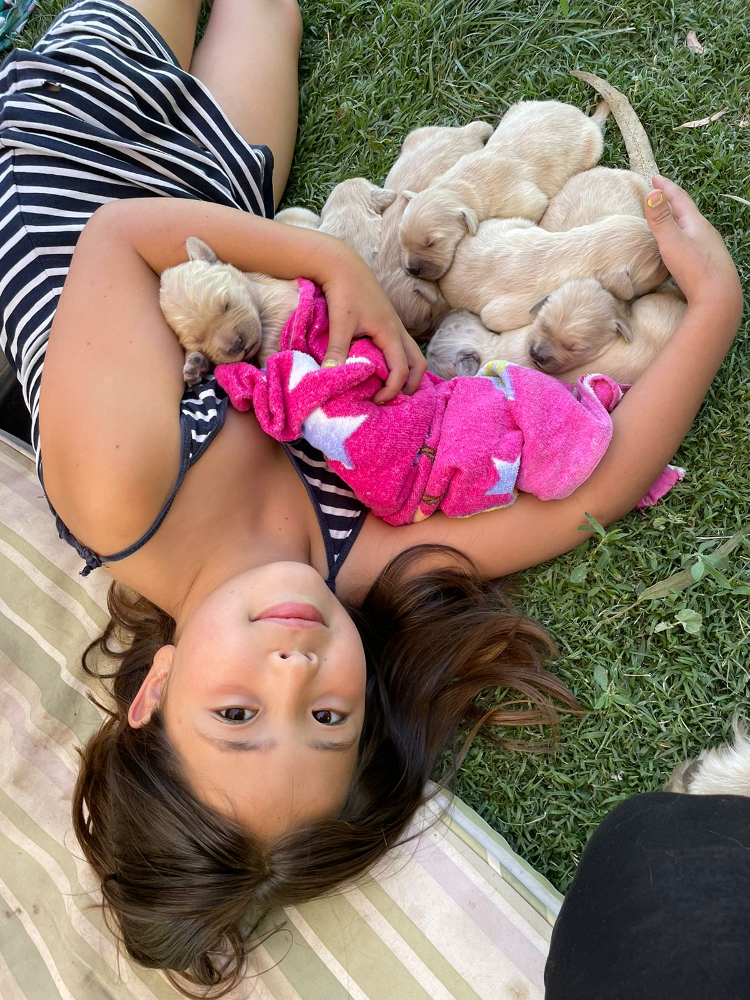
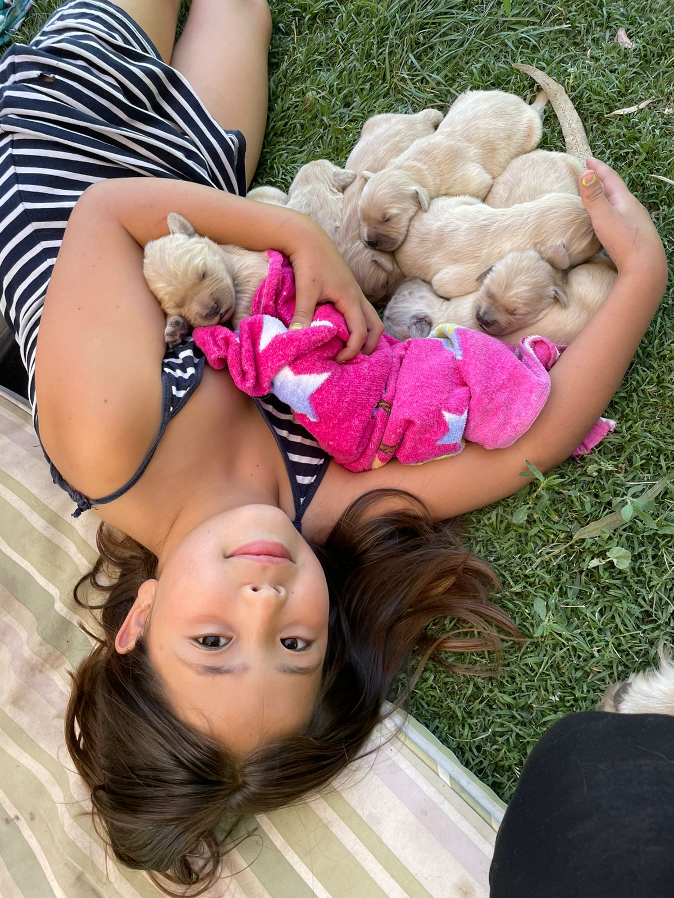

Bienvenido al Portal del 2do Básico B del Colegio San Pedro de Valle Grande.
Este es un sitio creado tanto para que los niños como sus padres y/o apoderados
puedas involucrarse más activamenete en el aprendizaje de cada una de las asignaturas
propias del curso. Aquí podrás encontrar un espacio para informarte, aprender y
estar al día con los contenidos que se van desarrollando en las clases, eventos del colegio
y muchas cosas más.
Diario Mural Digital
Cumpleaños de Florencia
Hoy 07 de junio, la princesa Florencia Toro está cumpliendo 8 años de vida. Todos sus compañeros y profesores del Colegio San Pedro queremos felicitarla y desearle un día muy hermoso. Florencia esta canción es para tí. Pincha el link a continuación: ¡¡¡Feliz Cumpleaños Florencia!!!
 

Cumpleaños de Luhan
Este domingo 26 de junio, la hermosa pequeña Luhan Silva está celebrando un año más de vida. Sus compañeritos y profesores del Colegio San Pedro queremos felicitarla de todo corazón y desearle un lindo cumpleaños. Luhan esta canción es para tí. Pincha el link a continuación: ¡¡¡Feliz Cumpleaños Luhan!!!
Cumpleaños de Johan
Tenemos el gusto de informarles a todos, que hoy 13 de julio, nuestro querido Johan Ellis está cumpliendo un año más de vida. Sus compañeritos y profesores del Colegio San Pedro lo felicitamos con mucho cariño y le desamos que tenga un día maravilloso y lo disfrute al máximo. Johan esta canción es para tí. Pincha el link a continuación: ¡¡¡Feliz Cumpleaños Johan!!!

Cumpleaños de Rodrigo
¡Hoy 17 de julio es un día especial! Nuestro amiguito Rodrigo Castillo está de cumpleaños. Tanto sus compañeritos como sus profesores del Colegio San Pedro lo felicitamos con amor y le deseamos que tenga un bello día, junto con su familia. Rodrigo, esta canción es para tí. Pincha el link a continuación: ¡¡¡Feliz Cumpleaños Rodrigo!!!
Cumpleaños de Amanda
Tenemos el agrado de contarles a todos que hoy viernes 19 de agosto, Nuestra querida Amanda Segovia está cumpliendo añitos. Desde el Colegio San Pedro le enviamos todo nuestro amor y le deseamos que pase un cumpleaños super feliz!!!! Amanda, esta canción es para tí. Pincha el link a continuación: ¡¡¡Feliz Cumpleaños Amanda!!!
Cumpleaños de Luciano
Hoy día 01 de septiembre, tenemos el gusto de contarles que nuestro amiguito Luciano Palma está cumpliendo un año más!!! Desde el Colegio San Pedro y de su curso, le enviamos todo nuestro cariño y nuestros mejores deseos. Que pase un cumpleaños maravilloso Lucianito. Esta canción es para tí. Pincha el link a continuación: ¡¡¡Feliz Cumpleaños Luciano!!!
Cumpleaños de Isaac
Este 13 de septiembre tenemos un cumpleañero en el curso: Isaac Pacheco, quien está cumpliendo 8 añitos!!! Desde el Colegio lo saludamos y le enviamos todo nuestro cariño y felicitaciones. Feliz cumpleaños Isaac. Esta canción es para tí. Pincha el link a continuación: ¡¡¡Canción de cumpleaños para Isaac!!!

Cumpleaños de Agustín
Hoy estamos celebrando nuevamenete un cumpleaños!!!! Hoy dìa se trata de nuestro querido amiguito Agustín Navarro, Estamos muy felices por este nuevo año de vida que Dios te da Agustìn y desde tu colegio te enviamos nuestras felicitaciones y mejores deseos. Que la pases muy lindo. Este vídeo es para tí. Pincha el link a continuación: ¡¡¡Vídeo de cumpleaños para Agustìn!!!
Cumpleaños de Edson
Es una gran alegría poder contarle a todos que hoy día nuestro querido Edson Espinoza está cumpliendo un año más. Recibe nuestro saludo y un gran abrazo de tus compañeritos y tu profesora. Te queremos y deseamos que lo pases muy feliz y te diviertas mucho. Este vídeo es para tí. Pincha el link a continuación: ¡¡¡Vídeo de cumpleaños para Edson!!!

Cumpleaños de Ignacio
Hoy 29 de septiembre nuestro querido compañerito Ignacio Gómez está celebrando un año más de vida. Con todo cariño le extendemos las más sinceras felicitaciones de parte de todos sus amiguitos y profesores del colegio San Pedro. Ignacio, que tengas un lindo día y disfrutes tu cumpleaños al máximo. Este vídeo es para tí. Pincha el link a continuación: ¡¡¡Vídeo de cumpleaños para Ignacio!!!
Cumpleaños de Bastian y Antonella
Dos hermanitos muy especiales de nuestro curso, Bastian y Antonella Morales están de cumpleaños el día de hoy!!! Es una alegría poder saludarlos y desearles un cumpleaños feliz. Los queremos mucho y les deseamos lo mejor en este día y siempre. Esta canción es para ustedes. Pincha el link a continuación: ¡¡¡Feliz Cumpleaños Bastian!!! ¡¡¡Feliz Cumpleaños Antonella!!!

Cumpleaños de Fabricio
Con todo cariño le extendemos un enorme abrazo y nuestras felicitaciones a nuestro querido Fabricio Rodríguez quien el pasado sábado 01 de octubre cumplió un año más de vida. Te queremos Fabricio y esperamos que Dios te bendiga con salud y muchos años de vida! Este vídeo es para tí. Pincha el link a continuación: ¡¡¡Vídeo de cumpleaños para Fabricio!!!
Cumpleaños de Pascale
Queremos felicitar con mucho cariño a la princesa Pascale Gómez en su cumpleaños. Pascalita, recibe todo nuestro amor y los mejores deseos de que pases un cumpleaños maravilloso y lo disfrutes con tu familia y amigos. Este vídeo es para tí. Pincha el link a continuación: ¡¡¡Vídeo de cumpleaños para Pascale!!!
Información para el curso
Recordar evaluación de Matemáticas sobre el calendario. Será el día lunes 13 de junio y deberán repasar los nombres de los días y meses en su correcto orden. también ubicar fechas en el calendario, contar semanas, ubicar días de la semana(ayer, hoy y mañana), entre otros.
COMUNICADO VACIONES DE INVIERNO
Estimada Comunidad Educativa, junto con saludar y esperando que se encuentren bien,
comunicamos a ustedes que, según lo dispuesto por el Ministerio de Educación, se adelantan las
vacaciones de invierno las que se inician el jueves 30 de junio y retornan el lunes 25 de julio.
Los horarios para miércoles 29 junio serán los siguientes:
Jornada de la mañana: Kínder A y B, 11:00 horas.
Primero A y Segundo A, 12:00 horas.
Tercero Básico a Cuarto Medio A, 13:00 horas.
Jornada de la tarde : Pre-kínder A y B, 16.00 horas
Primero B y Segundo B; 16:00 horas.
No se realizarán convivencias de fin de semestre debido al aumento de casos COVID-19 y
enfermedades virales.
Les deseamos que puedan aprovechar el tiempo en familia, sin otro particular,
SALUDOS CORDIALES,
EQUIPO DIRECTIVO